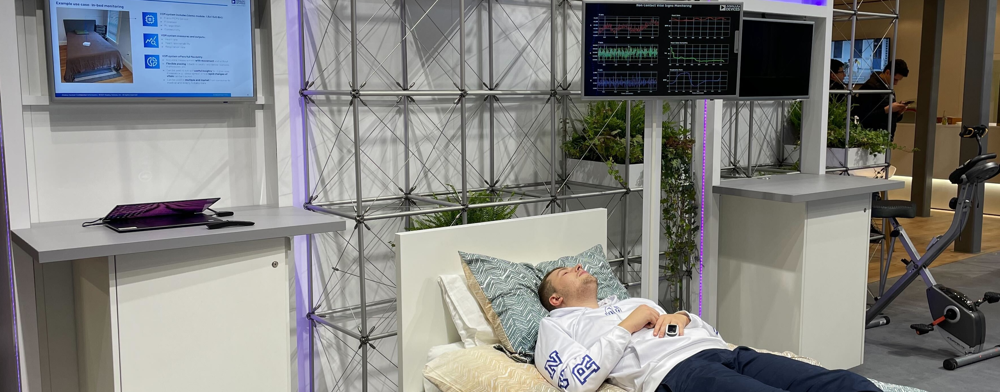
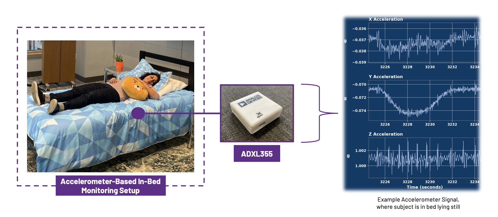

The Person-In-Bed Detection Challenge
ICASSP 2025 Signal Processing Grand Challenge
The Analog Garage is organizing a Signal Processing Grand Challenge at ICASSP 2025 in Hyderabad, India, on the challenge of detecting whether there is a person in a smart bed. This challenge is based on real-world data collected for a Non-Contact Vital Signs Monitoring project completed by the Analog Garage and the Digital Healthcare Business Unit at Analog Devices, Inc., in September 2024. We invite participation to this challenge to introduce the problem to the signal processing community, push forward the state of the art of the non-contact vitals monitoring space, and demonstrate some of the challenges of solving signal processing problems with relatively unconstrained real-world data.
The top participants will be invited to publish a paper at ICASSP 2025!
The Problem: Call for Participation
New designs of smart beds are built with the ability to monitor user vitals, such as heart rate and respiration rate, and sleep characteristics, such as quality and posture. Many are familiar with how such sleep insights can be estimated from smart watches. However, smart beds are arguably a more comfortable alternative to smart watches for sleeping related insights, as they are non-contact and enable users to sleep watch-free.
One sensor that enables estimating vitals and sleep insights in beds is an accelerometer. Accelerometers are preferrable for bed-based sleep insights as they do not capture sensitive user information such as audio and video which may otherwise turn users away from wanting to use such smart beds. When subjects lay on a smart bed with an accelerometer integrated within the mattress, the expansion and contraction of their chest from breathing induces a tilt in the mattress, which is measured by the accelerometer. It has been proven that vital signs such as heart rate and respiration rate can be extracted from accelerometers attached to a subject’s chest. Expanding on this idea, we propose that such vital signs can also be estimated based on the accelerometer recordings tracking the movements of the bed.
One challenge of accelerometer-only smart beds is determining when to estimate user vitals. It is important to distinguish ambient noise arising from other vibrations of the bed from the motions arising when a user is lying on the bed. In particular, it is essential to determine if a user is lying on the bed as otherwise the inferred vitals may correspond to spurious noise signals. Additionally, the vitals produced when no one is present could cause undue concern if they are outside the normal range. Determining the presence of a person in bed is made more challenging by a variety of factors such as:
- Person-to-person variations
- Position-based variations in "in bed" signals
- Vibrations captured from external disturbances like people walking around
- Motion artifacts introduced by users adjusting their position in bed
This challenge focuses on the person detection problem. We have collected a dataset of raw accelerometer signals from an ADXL355 accelerometer, placed in between a mattress and a mattress topper. The ADXL355 is an ultra-low noise accelerometer, with a noise density of 22.5 \(\frac{\mu g}{\sqrt{Hz}}\). The dataset contains samples from a variety of users with a variety of on and off-bed disturbances. We invite participants to partake in 2 tasks:
- Task 1: Classification of pre-chunked accelerometer signals into the following categories: {"not in bed", "in bed"}
- Task 2:Streaming version of a person-detection classifier which minimizes latency and maximizes accuracy.
Dataset
The provided datasets for this challenge were collected for research purposes at the Analog Garage, an advanced research and development center within Analog Devices, as part of a research project on estimating vital signs from an accelerometer placed within a mattress. The experimental setup is shown below.

An ADXL355 accelerometer is placed between a mattress and a mattress topper. An example signal generated from a subject lying still in bed is shown on the right. In this example, lower frequency data corresponding to respiration is most visible in the y-axis and higher frequency pulses associated with heart beats are most visible in the z-axis. Note however that this is only meant to be an illustrative example and is not always the case.Our team collected timestamped acceleromter data across 42 subjects. The subjects are sometimes in bed, in varying positions, and sometimes out of bed. There are varying levels of disturbances present in the data. Each subject contributes approximately 15 minutes of data, resulting in 10.5 hours of data.
Tracks and Evaluation
Track 1: Segmented Detection
For the first challenge, we invite participants to build a person-in-bed classifier that operates on pre-chunked accelerometer samples. The dataset contains entries in the following format: $$ \begin{equation} \begin{split} \{\hspace{1 cm}&\\ \hspace{1 cm}&\texttt{`subject'} : \texttt{int}, \\ \hspace{1 cm}&\texttt{`chunk_id'} : \texttt{int}, \\ \hspace{1 cm}&\texttt{`accel'} : [[a_{0,x}, a_{0,y}, a_{0,z}], [a_{1,x}, a_{1,y}, a_{1,z}], \dots], \\ \hspace{1 cm}&\texttt{`ts'} : [t_0, t_1, \dots], \\ \hspace{1 cm}&\texttt{`label'} : \texttt{int} \\ \}\hspace{1 cm}& \end{split} \end{equation} $$ \(\texttt{subject}\) is an integer ID corresponding to the subject data was collected on. \(\texttt{chunk_id}\) is unique ID for this chunk across all chunks in the dataset. Note that there is no particular meaning to the value \(\texttt{chunk_id}\) beyond being a unique identifier (i.e. order has no meaning).
Each \(\texttt{accel}\) sample can be converted to a \( (2500,3) \) matrix, resulting from the following collection attributes:
- Sample rate 250 Hz
- Sample length 10 seconds, giving 2500 samples at the above sample rate
- Each sample is a raw 3-axis accelerometer value
The objective of this task is to maximize the balanced accuracy of the classifer. This can be computed as below: $$ Acc_{balanced} = \frac{1}{2}(TPR + TNR) $$ where \( TPR \) is the true positive rate, computed as: $$ TPR = \frac{TP}{TP + FN} $$ and \( TNR \) is the true negative rate, computed as: $$ TNR = \frac{TN}{TN + FP} $$
Track 2: Streaming Detection
The real one
Registration
Why we need registration: the dataset is collected with real human beings lying in the bed. We therefore need to retain ownership of the data, which means we need you to send a license before we can share the data. So we'll send you that once you register and then send you the link to the data and sample code. The dataset and submissions will be handled via Kaggle.
Please contact us to register!